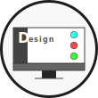

01. Services
Coding
コーディング
Webサイトの構築に不可欠なコーディング業務を承っております。一時的にコーダーが足りなくなった、既存サイトの加筆・修正をしてほしいなど様々ケースに対応致します。
Design
デザイン・UI/UX設計
デザインのご相談も随時お承りしております。お客様が携わる事業のイメージを壊さないことを前提に、訪れた人を感動させる工夫を織り込んだデザインをご提案させていただきます。
WordPress
ワードプレス
WordPressを使ったご案件もお承りしております。サイトのカスタマイズや既存サイトのWordPress化など、あらゆるニーズに対応致します。
Corporate
コーポレートサイト制作
デザインに古さを感じる御社のWebサイト、当方でモダンにリニューアルしてみませんか？事業スタイルに合わせた無駄のない運用プランもご提案いたします。もちろん新規事業のご案件も歓迎しております。
LandingPage
ランディングページ制作
ランディングページの制作もお任せください。ご依頼頂いたプロダクトで達成したい目的などをヒアリングさせて頂くとともに、競合調査やターゲット設定を行い「結果」の出せるランディングページを制作致します。
02.Flow
01.Plan
計画
まずはヒアリングから。お客様が求めるWebサイトの規模感や機能要件、ビジュアルイメージなどをお伺いします。また、お客様の事業についても詳しくお伺いさせて頂き、御社の強みやアピールポイントをリストアップしていきます。この段階でおおよその予算や工期もご提案させていただきます。
02.Design
デザイン

予算の見積りや計画に問題が無ければ、デザインの設計・キャッチコピーの選定から着手します。デザインが概ね完成した段階でお客様にもご確認頂き、変更してほしい箇所などがあれば修正を行います（修正のリクエストは2回まで無料とさせていただきます）。デザイン・キャッチコピーにご納得頂ければ、実装のフローへと移行します。
03.Build
実装作業
制作したデザインカンプをもとに、コーディングや機能の実装を行います。コーディングが終わり次第動作チェック、バグチェックなどを行い、問題なければ公開準備となります。
04.Deploy
公開
本番用のサーバーにアップロードし公開となります。サーバーのご用意がないお客様や、サーバー管理を任せたいというご要望にもプランをご用意させて頂いておりますので、お気軽ご相談ください。最もお得な運用方法をご提案致します。
03. Connect
お問い合わせは各種SNSのダイレクトメッセージ又は下記のメールアドレスよりお承りしております。ご依頼やご質問などお気軽にお問い合わせください。ざっくりとした内容でも結構です。
代表者:篠田亜理伊（Ari Shinoda）
出自:1995.4.27日生/鳥取県米子市出身
大阪市大阪府西区在住
独学からプログラミング/デザインの世界に足を踏み入れ、気づけば独立していました。単にコードが書ける、デザインができるということだけでなく、お仕事の中で生まれるコミュニケーションを大切にしてます。趣味はギターとパソコン、サバゲ―などなど。